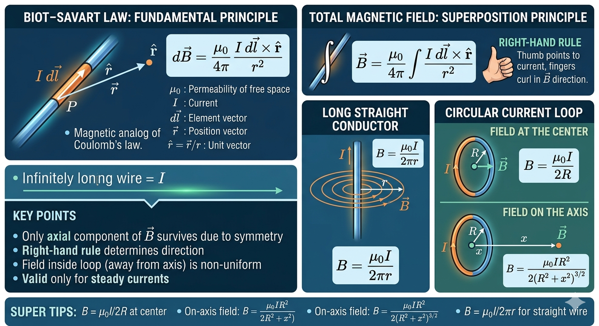

Biot–Savart Law and Its Application to Circular Current Loop

Image generated by Google AI
What Is Biot–Savart Law?
Imagine, you plug in a charger, and current begins to flow through the wire. Nothing seems visible, yet around that wire an invisible “influence” spreads through space. If you were to place a tiny compass nearby, its needle would deflect. This subtle effect is the magnetic field produced by moving charges, and the Biot–Savart Law tells us exactly how each tiny segment of that current contributes to the field.
This law connects motion of charges to magnetism at a very fundamental level. Just like how a moving crowd creates patterns of motion in a marketplace, each small moving charge creates a tiny magnetic influence, and the total field is the sum of all these microscopic contributions.
The Biot–Savart Law describes the magnetic field produced by a small segment of current-carrying conductor. It is the magnetic analog of Coulomb’s law, applying to steady currents.
For a small current element \( I\,d\vec{l} \), the magnetic field at point \( \vec{r} \) is:
\[ d\vec{B} = \frac{\mu_0}{4\pi} \frac{I\, d\vec{l} \times \hat{r}}{r^2} \]
Deeper Physical Insight: The cross product \( d\vec{l} \times \hat{r} \) tells us that magnetic fields are inherently rotational in nature. Unlike electric fields (which point radially), magnetic fields “wrap around” currents. This is why we always observe circular field lines around wires — a key experimental fact captured beautifully by this equation.
Where:
- \( \mu_0 = 4\pi \times 10^{-7} \, \text{T m/A} \): Permeability of free space
- \( I \): Current
- \( d\vec{l} \): Element vector along current
- \( \vec{r} \): Position vector from element to observation point
- \( \hat{r} = \vec{r}/r \): Unit vector pointing from current element to field point
Observation: The \( \frac{1}{r^2} \) dependence shows that nearby current elements dominate the magnetic field — a crucial idea when approximating fields in real circuits.
Total Magnetic Field
In real wires, current is not confined to a single point but distributed along a path. So we add (integrate) the contributions of all tiny current elements. This is similar to how the total brightness of a glowing wire comes from every tiny part emitting light.
The total field is the vector sum (integral) of contributions over the entire current:
\[ \vec{B} = \frac{\mu_0}{4\pi} \int \frac{I\, d\vec{l} \times \hat{r}}{r^2} \]
Key Insight: Because this is a vector integral, symmetry becomes extremely powerful. In many problems, components cancel out, leaving only the physically meaningful direction.
Magnetic Field of a Long Straight Conductor
If you observe a straight current-carrying wire (like a power cable), the magnetic field forms concentric circles around it, something you can actually verify using iron filings or a compass.
At a perpendicular distance \( r \) from an infinitely long wire carrying current \( I \):
\[ B = \frac{\mu_0 I}{2\pi r} \]
Deeper Insight: The \( \frac{1}{r} \) dependence (not \( \frac{1}{r^2} \)) arises due to the continuous distribution of current along an infinite line. Geometry changes the field behavior — a powerful idea in electromagnetism.
Direction follows the right-hand rule: curl fingers in current direction; thumb points to \( \vec{B} \).
Circular Current Loop
Now imagine bending that straight wire into a loop, like a coil in a motor or a charging pad. The geometry changes dramatically, and so does the magnetic field pattern.
Consider a loop of radius \( R \) carrying current \( I \).
Field at the Center
At the center, every current element contributes equally due to symmetry. All sideways components cancel, and only the perpendicular components add up.
Symmetry ensures the magnetic field at the center is:
\[ B = \frac{\mu_0 I}{2R} \]
Physical Meaning: The loop acts like a “magnetic dipole,” similar to a tiny bar magnet. This is the fundamental principle behind electromagnets.
Direction: perpendicular to loop plane (right-hand thumb rule).
Field on the Axis
If we move away from the center along the axis, the symmetry reduces but still simplifies the math, only axial components survive.
At distance \( x \) along the loop’s axis:
\[ B = \frac{\mu_0 I R^2}{2 (R^2 + x^2)^{3/2}} \]
At \( x=0 \), this reduces to the center value.
Observation: The field decreases rapidly as we move away because contributions from different parts begin to cancel more effectively.
Key Points
- Only the axial component of \( \vec{B} \) survives due to symmetry.
- Right-hand rule determines the direction of \( \vec{B} \).
- The field inside the loop (away from the axis) is non-uniform.
Deep Insight: Magnetic fields are fundamentally solenoidal (they form closed loops). There are no “magnetic charges,” which is why field lines never begin or end, a concept later formalized in Maxwell’s equations.
Examples
- Loop radius 0.05 m, current 5 A, field at center:
\[ B = \frac{4\pi \times 10^{-7} \times 5}{2 \times 0.05} = 10^{-5} \pi \, \text{T} \]
Insight: Even with moderate current, the magnetic field is quite small, which is why multiple turns (coils) are used in practical devices.
- At x = 0.05 m on the axis:
\[ B = \frac{4\pi \times 10^{-7} \times 5 \times (0.05)^2}{2 \left[(0.05)^2 + (0.05)^2\right]^{3/2}} \]
Observation: Notice how both geometry and distance influence the field, not just current.
- Electron parallel to wire, current 5 A, distance 0.2 m:
\[ B = \frac{4\pi \times 10^{-7} \times 5}{2\pi \times 0.2} = 5 \times 10^{-6} \, \text{T} \]
Force on electron, speed \( 10^5 \, \text{m/s} \):
\[ F = |q| v B = (1.6 \times 10^{-19}) \times 10^5 \times 5 \times 10^{-6} = 8.0 \times 10^{-20} \, \text{N} \]
Physical Insight: This tiny force is the basis of devices like cathode ray tubes and particle accelerators, where controlled magnetic fields guide charged particles.
Concept Questions
- Importance of Biot–Savart Law? Allows calculation of magnetic fields from arbitrary current shapes.
- Direction of magnetic field at loop’s center? Perpendicular to loop plane (right-hand rule).
- How does the field vary on axis? Decreases as \( (R^2 + x^2)^{-3/2} \).
- Field at infinity on axis? Approaches zero as x → ∞.
- Valid for time-varying currents? No, only steady currents.
Extra Insight: For time-varying currents, Biot–Savart law is replaced by more general Maxwell equations, introducing electromagnetic waves, the basis of light and wireless communication.
Super Tips
- Memorize B = μ₀I/2R at center.
- On-axis field: \( B = \frac{\mu_0 I R^2}{2(R^2 + x^2)^{3/2}} \).
- Use right-hand rule for direction.
- Straight wire: B = μ₀I/2πr.
- Use superposition for composite loops.
Exam Insight: Always look for symmetry first, it reduces integration effort drastically.
Previous Year Questions (PYQs)
Q1. (NEET 2022) Given two statements:
- Statement I: Biot-Savart's law gives the magnetic field of an infinitesimal current element \( I\,d\vec{l} \).
- Statement II: Biot-Savart's law is analogous to Coulomb's inverse square law of charge \( q \), former vector, latter scalar.
Answer choices:
- Both Statement I and II are correct
- Both Statement I and II are incorrect
- Statement I correct, Statement II incorrect
- Statement I incorrect, Statement II correct
Answer: (c) Statement I correct, Statement II incorrect
Insight: The key trap is recognizing that Coulomb’s law is also vector in full form, but often treated as scalar in magnitude form.
Q2. (NEET 2021) Electron near infinitely long wire (current 5 A), speed 10⁵ m/s, distance 0.2 m. Find force.
Solution:
Step 1: Magnetic field due to long straight conductor:
\[ B = \frac{\mu_0 I}{2\pi r} = \frac{4\pi \times 10^{-7} \times 5}{2\pi \times 0.2} = 5 \times 10^{-6} \, \text{T} \]
Step 2: Magnetic force on electron:
\[ F = |q| v B \sin\theta, \quad \theta = 90^\circ \]
\[ F = (1.6 \times 10^{-19}) \times (10^5) \times (5 \times 10^{-6}) = 8.0 \times 10^{-20} \, \text{N} \]
Answer: \( 8.0 \times 10^{-20} \, \text{N} \)
Exam Insight: Always check angle between velocity and magnetic field, missing \( \sin\theta \) is a common mistake.